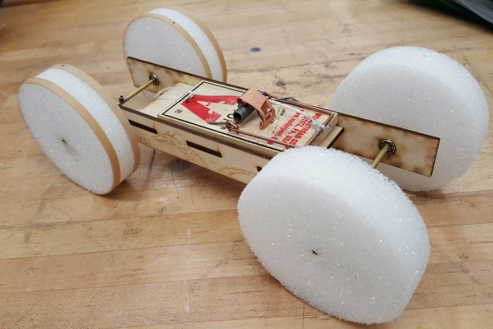
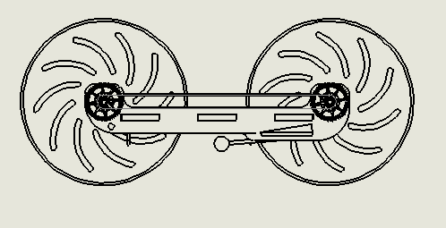
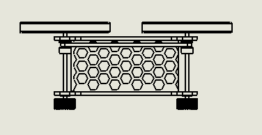

Overview
In my first mechanical engineering course, our team of three built a car powered only by a mousetrap spring. The goal was to climb as high as possible up a ramp, so every design choice aimed to keep the car light and stop the wheels from slipping.

First prototype
Nessy I had a balsa body and was driven by a string wound around the rear axle. The trap's snap lifted one side of the car and made it veer, so it couldn't climb the ramp reliably.

Final design
Nessy II was laser cut from birch with a honeycomb center plate to save weight. A timing belt linked both axles for four-wheel drive, which spread the power, stopped wheel slip and fixed the steering problem. We turned foam wheels on a lathe, and a snap-fit acrylic clip held the trap with no adhesives. It took six laser-cut versions to get the fit right.


Result
On its best run, the car lifted its center of mass 0.56 m against a predicted 0.68 m, about 82% efficiency and 10% better than the first prototype.